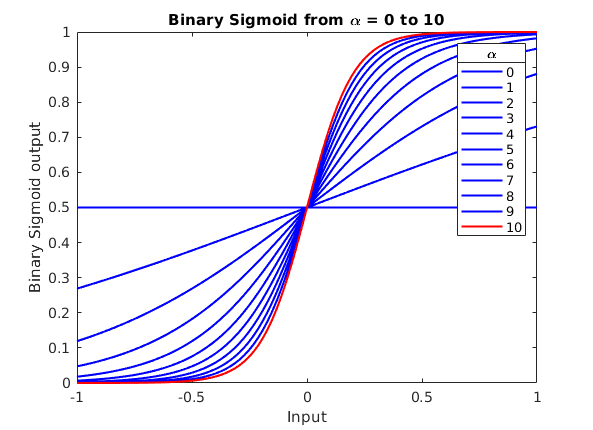

Contents
SectionA_1() %SectionA_ii() %SectionA_IVRun() %SectionA_VRun() %SectionB_iRun() %SectionB_iiRun() %SectionB_iiiRun()
Helper Functions
function output = binarySigmoid(Alpha,vk) output = 1./(1 + exp(-Alpha * vk)); end
lgd =
Legend (0, 1, 2, 3, 4, 5, 6, 7, 8, 9, 10) with properties:
String: {'0' '1' '2' '3' '4' '5' '6' '7' '8' '9' '10'}
Location: 'northeast'
Orientation: 'vertical'
FontSize: 9
Position: [0.7710 0.4951 0.1158 0.4047]
Units: 'normalized'
Use GET to show all properties
 Helper Set Creation Functions
function [trainingSet,desiredSet, sizecheck, sizeList] = SetCreation(InputVectors,desired,presentations) sizecheck = size(InputVectors); sizeList = sizecheck .* presentations; inputshuffle = InputVectors; desiredshuffle = desired; for i = 1:(presentations-1) inputshuffle = cat(1,inputshuffle,InputVectors); desiredshuffle = cat(1,desiredshuffle,desired); end index = randperm(sizeList(1)); trainingSet = inputshuffle(index,:); desiredSet = desiredshuffle(index,:); end function [trainingSet, sizecheck, sizeList] = SetCreationNODESIRED(InputVectors,presentations) %Checking input sizes sizecheck = size(InputVectors); sizeList = sizecheck .* presentations; %Placeholder which will hold the inputvectors by the number of %presentations inputshuffle = InputVectors; %creating the input vectors by presentations for i = 1:(presentations-1) inputshuffle = cat(1,inputshuffle,InputVectors); end %Creating a shuffling index index = randperm(sizeList(1)); %Shuffling the vectors to create a training set trainingSet = inputshuffle(index,:); end function [trainingSet,desiredSet, sizecheck, sizeList] = SetCreationNoise(InputVectors,desired,presentations,noiseLevel) sizecheck = size(InputVectors); sizeList = sizecheck .* presentations; inputshuffle = InputVectors; desiredshuffle = desired; rng(20,"simdTwister"); for i = 1:(presentations-1) inputshuffle = cat(1,inputshuffle,InputVectors); desiredshuffle = cat(1,desiredshuffle,desired); end index = randperm(sizeList(1)); trainingSet = inputshuffle(index,:); noise = randi([0 noiseLevel],sizeList(1), 1); trainingSet = trainingSet + noise; desiredSet = desiredshuffle(index,:); end function initialWeights = weightGeneration(InputSize) lowEnd = -1; highEnd = 1; initialWeights = (highEnd-lowEnd).*rand(1,InputSize) + lowEnd; end
Helper ANM operation functions
function forwardRunResults = forwardoperation(input,weights,AlphaIN) integrate = dot(input,weights); forwardRunResults = binarySigmoid(AlphaIN, integrate); end function [updatedweights, error] = updateWeights(learningRate,desired,out,input,weights) error = (desired - out); wieghtDelta = learningRate * error .* input; updatedweights = weights + wieghtDelta; end function [ANMWeights,erroroutput] = Trainanm(input,desired, weights, alpha, learningRate) ForwardOutput = forwardoperation(input, weights,alpha); [ANMWeights,erroroutput] = updateWeights(learningRate,desired,ForwardOutput,input,weights); end function [ForwardOutput, error] = Forwardanm(input,desired, weights, alpha) ForwardOutput = forwardoperation(input, weights,alpha); error = (desired - ForwardOutput); end
Helper Training Functions
function [finalOutput,WeightHistory,errorhistory] = ANMTrainiterations(InputVectors,desired,presentations, alpha, learningRate,iterations) [set, desiredouputs, vectorSize, sizeList] = SetCreation(InputVectors,desired,presentations); inputvectorsize = vectorSize(2); Weights = weightGeneration(inputvectorsize); WeightHistory = transpose(Weights); errorhistory = zeros(1,sizeList(1)); for iterate = 1:iterations for indexOut = 1:sizeList(1) [Weights,error] = Trainanm(set(indexOut,:),desiredouputs(indexOut), Weights, alpha,learningRate); WeightHistory = cat(2, WeightHistory, transpose(Weights)); errorhistory(indexOut) = error; end end finalOutput = Weights; end function [finalOutput,WeightHistory,errorhistory] = ANMTrain(InputSet,desiredSet,WeightsInput, alpha, learningRate,iterations) %This function operates the training phase of the ANM % The inputset and desired set is inputted and then the function trains % the ANM on these inputs using the TrainANM function. %Setting up the placeholder variables Weights = WeightsInput; sizeList = size(InputSet) weightSizeList = size(transpose(InputSet)) WeightHistory = zeros(weightSizeList); errorhistory = zeros(sizeList(1),1); for iterate = 1:iterations for indexOut = 1:sizeList(1) %This loop runs the training of the ANM using the TrainANM %function, which outputs the new weights from the operation and %the error which was calculated from the training operation [Weights,error] = Trainanm(InputSet(indexOut,:),desiredSet(indexOut), Weights, alpha,learningRate); WeightHistory(:,indexOut) = transpose(Weights); errorhistory(indexOut) = error; end end %The final weights from the training phase are outputted seperately to %be used in the testing/validation phase. finalOutput = Weights; end function [finalOutput,outputhistory,errorhistory] = ANMTViterations(InputSet,desiredSet,Weights,alpha,iterations) disp("ANMTViterations") %This function acts similarily to the training phase ANM operation, %however it does not update the weights, and instead outputs the output %history of the testing / validation phase sizeList = size(InputSet) %Placeholder array and values for outputting the output and error %during operation of the ANM errorhistory = zeros(sizeList(1)); outputhistory = zeros(sizeList(1)); output = 0; weightinput = Weights; %Running the forward operation of the ANM using the weights that have %been passed to the function for iterate = 1:iterations for indexOut = 1:sizeList(1) %ForwardANM function is used, which outputs the output and %error associated with an input from a single vector of the %input set and its desired output for the vector [output,error] = Forwardanm(InputSet(indexOut,:),desiredSet(indexOut), weightinput, alpha); %Adding the error and output to the history arrays errorhistory(indexOut) = error; outputhistory(indexOut) = output; end end %Output the final output from the testing/validation phase finalOutput = output; end
Helper Plotting Functions
function plottingSectionA(WeightHistory,errorhistory, name) weightlength = size(WeightHistory,1); figure title(name) tiledlayout(2,1) ax1 = nexttile; for weightindex = 1:weightlength plot(ax1,WeightHistory(weightindex, :),'DisplayName','w '+string(weightindex),'LineWidth',2.0) hold on; end legend('Location','bestoutside') xlabel("Num. of Presentations") ylabel("Weight Value") ax2 = nexttile; plot(ax2,errorhistory,'LineWidth',2.0) xlabel("Num. of Presentations") ylabel("Error Value") title(ax1,'Weights vs presentations') title(ax2,'Error vs presentations') sgtitle(name) end function plottingSectionB(OutputHistory, desiredoutput ,desiredList, name) outlength = size(OutputHistory,1) vectorAmount = size(desiredList,1) vectorPositions = (desiredoutput == desiredList(1)); splitVectorOuput = transpose(OutputHistory(vectorPositions)); names = ['L', 'T', 'O']; for vectorindex = 2:vectorAmount vectorPositions = (desiredoutput == desiredList(vectorindex)); splitVectorOuput = cat(1,splitVectorOuput,transpose(OutputHistory(vectorPositions))); end figure for vectorIterate = 1: vectorAmount plot(splitVectorOuput(vectorIterate,:),'DisplayName', names(vectorIterate),'LineWidth',1.0); hold on; end legend(); xlabel("Num. of Presentations") ylabel("Predicted Value") title(name) end function plottingSectionBerror(errorhistory, desiredoutput ,desiredList, name) vectorAmount = size(desiredList,1) vectorPositions = (desiredoutput == desiredList(1)); splitVectorOuput = transpose(errorhistory(vectorPositions)); names = ['L', 'T', 'O']; for vectorindex = 2:vectorAmount % desiredList(vectorindex) vectorPositions = (desiredoutput == desiredList(vectorindex)); splitVectorOuput = cat(1,splitVectorOuput,transpose(errorhistory(vectorPositions))); end figure for vectorIterate = 1: vectorAmount %splitVectorOuput(vectorIterate); plot(splitVectorOuput(vectorIterate,:),'DisplayName', names(vectorIterate),'LineWidth',1.0); hold on; end legend(); xlabel("Num. of Presentations") ylabel("Error Value") title(name) end
Section A
This function runs the binary Sigmoid function for a range of alpha values
function SectionA_1() %Alpha range alphainputs = [0,1,2,3,4,5,6,7,8,9,10]; %range of inputs into binary sigmoid vk = linspace(-1, 1,100); figure %loop which runs the binary sigmoid for an alpha value %result is taken and plotted for i = 1:11 out = binarySigmoid(alphainputs(i),vk); if (alphainputs(i) == 10) plot (vk, out,'r','LineWidth',1.5) else plot (vk, out,'b','LineWidth',1.5) end hold on end %Plot Formatting lgd = legend(string(alphainputs)) title(lgd,'\alpha') title('Binary Sigmoid from \alpha = 0 to 10') xlabel("Input") ylabel("Binary Sigmoid output") end
Section A_ii
This function runs the set creation generator
function SectionA_ii() %Input vectors to make presentations of and shuffle inputvect = [1 1 1 1 1 1 1 1 1 1; 0 1 0 1 0 1 0 1 0 1; 0 0 0 0 0 0 0 0 0 0;-1 -1 -1 -1 -1 -1 -1 -1 -1 -1]; presentations = 25; %Function which generates a set of training vectors of N presentations %per training vector. Also returns any Desired outputs which match the %training vector [trainingSet, sizecheck, sizeList] = SetCreationNODESIRED(inputvect,presentations); disp(trainingSet); end
Section A_iv
This function runs the train function
function SectionA_IVRun() inputvect = [1 0 0 1 0 0 1 1 1]; desired = [1]; presentations = 3000; alpha = 1; learningrate = 0.01; iterations = 1; [finalOutput,WeightHistory,errorhistory] = ANMTrainiterations(inputvect,desired,presentations, alpha, learningrate,iterations); plottingSectionA(WeightHistory,errorhistory,"Input L : \alpha = 1, Learning Rate = 0.01"); alpha = 5; learningrate = 0.01; [finalOutput,WeightHistory,errorhistory] = ANMTrainiterations(inputvect,desired,presentations, alpha, learningrate,iterations); plottingSectionA(WeightHistory,errorhistory,"Input L : \alpha = 5, Learning Rate = 0.01"); alpha = 1; learningrate = 1; [finalOutput,WeightHistory,errorhistory] = ANMTrainiterations(inputvect,desired,presentations, alpha, learningrate,iterations); plottingSectionA(WeightHistory,errorhistory,"Input L : \alpha = 1, Learning Rate = 1"); end
Section A_V
function SectionA_VRun() inputvect = [1 1 1 1 0 1 1 1 1]; desired = [1]; presentations = 3000; alpha = 5; learningrate = 0.01; iterations = 1; [set, desiredouputs, vectorSize, sizeList] = SetCreation(inputvect, desired , presentations); Checkwieghts = weightGeneration(vectorSize(2)); [finalOutput,WeightHistory,errorhistory] = ANMTrainiterations(inputvect,desired,presentations, alpha, learningrate,iterations); plottingSectionA(WeightHistory,errorhistory,"Training O : \alpha = 5, Learning Rate = 0.01"); end
SECTION B_i
function SectionB_iRun() %This function runs the section B_i of the assignment, it uses the %inputted training vectors and associated desired outputs, generates a %training set and then trains the ANM from the training set. It then %tests and validates the ANM. inputvect = [1 0 0 1 0 0 1 1 1; 1 1 1 0 1 0 0 1 0; 1 1 1 1 0 1 1 1 1]; desired = [1; 0.6; 0.3]; presentations = 3000; alpha = 5; learningrate = 0.01; iterations = 1; % SET CREATION [set, desiredouputs, vectorSize, sizeList] = SetCreation(inputvect, desired , presentations); Checkwieghts = weightGeneration(vectorSize(2)); %TRAINING [FinalWeight,WeightHistory,errorhistory] = ANMTrain(set,desiredouputs, Checkwieghts, alpha, learningrate,iterations); %Training results plottingSectionA(WeightHistory,errorhistory,"LTO training: \alpha = 5, Learning Rate = 0.01"); %Testing Phase [TESTFinaloutput,Testoutputhistory,TESTerrorhistory] = ANMTViterations(set,desiredouputs,FinalWeight,alpha,iterations); plottingSectionB(Testoutputhistory,desiredouputs,desired, "Predicted output during Testing"); plottingSectionBerror(TESTerrorhistory,desiredouputs,desired, "Error vs presentation during Testing"); %Validation Phase %The Validation phase of the function generates a new set which is the %validation set for the ANM. It uses the same input vectors and desired %output, and then generates a new set, based on the presentations2 %value, which is set to half the presentations value. presentations2 = 1500; [Validset, Validdesiredouputs, vectorSize, sizeList] = SetCreation(inputvect, desired , presentations2); [Finaloutput,Validoutputhistory,validerrorhistory] = ANMTViterations(Validset,Validdesiredouputs,FinalWeight,alpha,iterations); plottingSectionB(Validoutputhistory,Validdesiredouputs,desired, "Predicted output during Validation"); plottingSectionBerror(errorhistory,desiredouputs,desired, "Error vs presentation during training"); end
SECTION B_ii
function SectionB_iiRun() inputvect = [1 0 0 1 0 0 1 1 1; 1 1 1 0 1 0 0 1 0; 1 1 1 1 0 1 1 1 1]; desired = [1; 0.6; 0.3]; presentations = 3000; alpha = 5; learningrate = 0.01; iterations = 1; % SET CREATION [set, desiredouputs, vectorSize, sizeList] = SetCreation(inputvect, desired , presentations); Checkwieghts = weightGeneration(vectorSize(2)); %TRAINING [FinalWeight,WeightHistory,errorhistory] = ANMTrain(set,desiredouputs, Checkwieghts, alpha, learningrate,iterations); %Training results plottingSectionA(WeightHistory,errorhistory,"LTO training: \alpha = 5, Learning Rate = 0.01"); presentations2 = 1500; noiseLevel = 1; [Validset, Validdesiredouputs, vectorSize, sizeList] = SetCreationNoise(inputvect, desired , presentations2, noiseLevel); [Finaloutput,Validoutputhistory,validerrorhistory] = ANMTViterations(Validset,Validdesiredouputs,FinalWeight,alpha,iterations); plottingSectionB(Validoutputhistory,Validdesiredouputs,desired, "No noise model - Noisy Validation, level " + string(noiseLevel)); plottingSectionBerror(errorhistory,desiredouputs,desired, "Error vs Presentations"); noiseLevel = 5; [Validset, Validdesiredouputs, vectorSize, sizeList] = SetCreationNoise(inputvect, desired , presentations2, noiseLevel); [Finaloutput,Validoutputhistory,validerrorhistory] = ANMTViterations(Validset,Validdesiredouputs,FinalWeight,alpha,iterations); plottingSectionB(Validoutputhistory,Validdesiredouputs,desired, "No noise model - Noisy Validation, level " + string(noiseLevel)); plottingSectionBerror(errorhistory,desiredouputs,desired, "Error vs Presentations"); end
SECTION B_iii
function SectionB_iiiRun() inputvect = [1 0 0 1 0 0 1 1 1; 1 1 1 0 1 0 0 1 0; 1 1 1 1 0 1 1 1 1]; desired = [1; 0.6; 0.3]; noiseLevel = 5; presentations = 3000; alpha = 5; learningrate = 0.01; iterations = 1; % SET CREATION [set, desiredouputs, vectorSize, sizeList] = SetCreationNoise(inputvect, desired , presentations, noiseLevel); Checkwieghts = weightGeneration(vectorSize(2)); %TRAINING [FinalWeight,WeightHistory,errorhistory] = ANMTrain(set,desiredouputs, Checkwieghts, alpha, learningrate,iterations); %Training results plottingSectionA(WeightHistory,errorhistory,"LTO training: \alpha = 5, Learning Rate = 0.01"); presentations2 = 1500; [Validset, Validdesiredouputs, vectorSize, sizeList] = SetCreationNoise(inputvect, desired , presentations2, noiseLevel); [Finaloutput,Validoutputhistory,validerrorhistory] = ANMTViterations(Validset,Validdesiredouputs,FinalWeight,alpha,iterations); plottingSectionB(Validoutputhistory,Validdesiredouputs,desired, "Model trained with Noisy data " + string(noiseLevel)); plottingSectionBerror(errorhistory,desiredouputs,desired, "Error vs Presentation - Noisy"); end